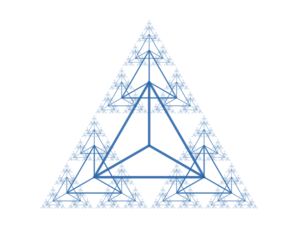

<div class="textcontainer">
<h3>About Me</h3>
<p class="margin"> </p>
<div class="center-row">
<p></p>
<p id="aboutme">
Hello There! I am a rising senior who is interested in math, programming, and engineering. Along the way I've
explored competition math and programming (reached AIME twice and am USACO gold) and have done various projects
exploring them as well. For example, that profile picture on the left was actually made in <a href="https://www.desmos.com/calculator/r1atsvuyta" target="_blank">desmos</a>.
</p>
</div>
<br></br>
Some other projects include:<br>
<div class="indent">
<a href="https://www.desmos.com/calculator/bx8bydt9tm" target="_blank">3D grapher in desmos</a><br>
fourier series experimentation:
<a href="https://www.desmos.com/calculator/qy62l8j12a" target="_blank">1</a>,
<a href="https://www.desmos.com/calculator/7nhlejziuh" target="_blank">2</a>,
<a href="https://www.desmos.com/calculator/anwpfgfvdo" target="_blank">3</a>,
<a href="https://www.desmos.com/calculator/avk6qkieow" target="_blank">4</a>
<br>
<a href="https://github.com/EsotericPyramid/fluid-sim" target="_blank">Fluid simulation</a><br>
an AI for the MNIST dataset from scratch (had trouble pushing to github)
<a href="https://github.com/EsotericPyramid/TwentyFortyEight">2048</a>
and more
</div>
<br>
<br>
<br>
<br>
<br>
<br>
And one final treat....
<br>
<video width="640" height="480" controls>
<source src="bad_apple_but_fluid_sim.mp4" type="video/mp4">
</video>
</div>